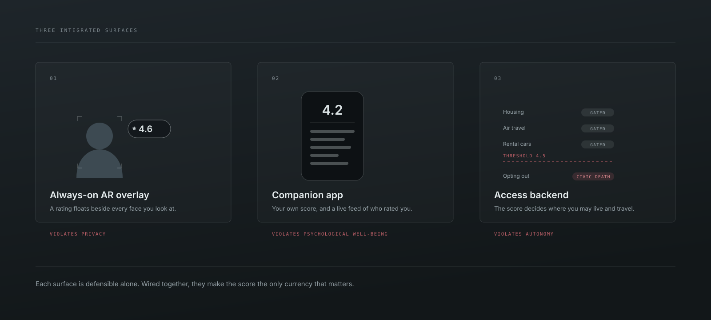
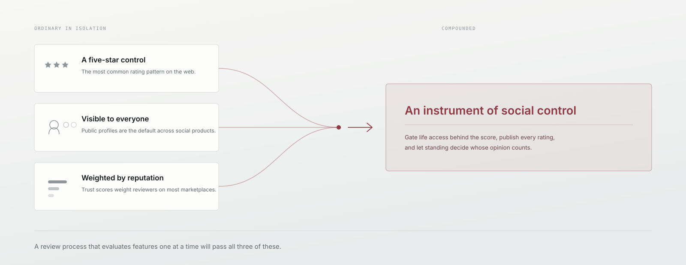
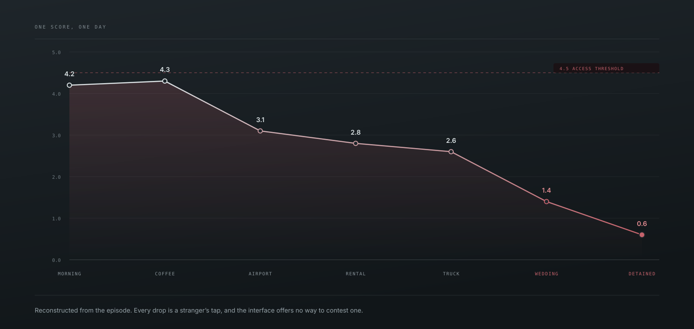

The Social Rating System
A UX ethics evaluation of Black Mirror's most prescient interface, built entirely from patterns that ship in real products today.

Every interface carries values, whether the designer chooses them or not.
In “Nosedive,” a smartphone app quietly restructures society. Everyone carries a score between zero and five, assembled from the ratings strangers give them after each brief interaction. The number decides where they can live, who returns their calls, and whether they board their flight.
The system is built from thoroughly ordinary consumer-app patterns: pastel icons, smooth taps, a friendly five-star control. This evaluation maps those features against ethical frameworks HCI has been articulating for thirty years, and argues that the damage comes from decisions teams make casually, every day.
The Interface
The system has three integrated surfaces. An augmented-reality overlay floats a 0 to 5 rating beside anyone the user looks at. A companion app shows the user's own aggregate score and a running feed of recent ratings. A backend gates real-world access, housing and airline tickets and rental cars and wedding invitations, behind rating thresholds. Opting out carries penalties steep enough to function as civic death.

A five-star control is unremarkable on its own. Add score-gated access and rater weighting, and the same control becomes an instrument of social control. All three decisions would sail through a product review.

Decisions that once belonged to human judgment get delegated to a tool, and the tool's output eventually becomes the decision.
On the closed-loop problem, after Friedman & Kahn
Method
The evaluation applies three complementary lenses. Friedman and Kahn's value-sensitive design work supplies the catalogue of human values a designer should actively consider: privacy, autonomy, informed consent, freedom from bias, welfare, trust, accountability. Their earlier work on human agency names the two mechanisms by which systems distort it. Sherry Turkle's “at interface value” explains how people come to relate to computational objects through appearances. Proctor and Van Zandt's work on human information processing grounds the cognitive costs.
The core analytical move is a systematic feature-to-value mapping: seven concrete system features, each assessed against the value it most directly implicates, with a stated mechanism. The verdict is uniform.
| Feature | Value | Verdict | Mechanism |
|---|---|---|---|
| Always-on AR score overlay | Privacy | Violates | Ratings broadcast to every nearby user by default, with no control over who sees the score or its history. |
| Score-gated access to housing, travel, events | Autonomy | Violates | Life decisions are constrained by aggregated peer opinion. |
| Mandatory participation, opaque algorithm | Informed consent | Violates | Users cannot opt out, and the weighting logic is undisclosed, so consent fails on both counts. |
| Continuous public feedback on every interaction | Psychological well-being | Violates | Chronic performance anxiety and emotional labour crowd out genuine affect. |
| Ratings weighted by the rater's own score | Freedom from bias | Violates | Existing privilege becomes algorithmic leverage. Bias by construction. |
| Score-optimised smile prompts and social scripts | Authenticity | Violates | The system rewards performed warmth, replacing connection with strategic display. |
| Algorithmic aggregation with no dispute mechanism | Human agency | Violates | No recourse against unfair or retaliatory ratings, so moral authorship erodes. |
Findings
The deepest harm is to agency. Friedman and Kahn describe two ways a computational system distorts a person's sense of moral agency: reducing the human to a mechanical role, and projecting agency onto the system until users treat it as a moral actor. Nosedive does both simultaneously. Lacie rehearses conversations in the mirror, laughs at jokes she doesn't find funny, and compliments strangers' shoes to raise her score. “Being a good person” has been converted into “optimising for a number.” Meanwhile users speak about the rating as though it has moods: it doesn't like me today, it's being generous. They grant the algorithm exactly the moral standing they have lost.

Turkle's authenticity crisis becomes literal here. She wrote about relational artifacts, robotic pets and chatbot companions, producing the feeling of connection without the mutual recognition that gives connection meaning. Nosedive extends that crisis to interactions between humans. When every encounter is also a rating event, both parties are simultaneously submitting a performance and scoring the other's. The warmth is manufactured for the transaction.
And the cognitive costs are visible throughout. Attention splits between the person and the number floating beside their face, and both tasks degrade. Memory fills with strategic patterns, which behaviour produced a 4.8, which coworker to avoid, displacing the relational knowledge ordinary friendships are built from. Problem solving collapses into optimisation of a single metric, and moral reasoning atrophies alongside it. By the end, Lacie's internal question in any interaction is what will get me a high rating here, and the older question, what is the right thing to do, has fallen out of use.
Why It Matters
Nosedive works as UX criticism precisely because its components are familiar to anyone who spends time online: five-star reviews, karma points, follower counts, credit scores, gig-platform ratings. The episode unifies those patterns into a single metric governing every domain of life and lets the consequences play out. Every interaction in it already exists somewhere.
The takeaway for practitioners is direct. A team that defaults to a visible aggregate score, weights ratings by rater authority, or ties access to a number is making ethical decisions that will affect real people, whether or not anyone in the room frames it that way. Friedman, Kahn, Turkle, and Proctor and Van Zandt provide the vocabulary to surface those decisions consciously. Applying it at design time, before the feature ships, is the practitioner's responsibility.
Writing this changed how I work. The feature-to-value mapping is now something I run informally on my own designs, and it is why EffortCircles has no leaderboard, and why the nutrition assistant shows ranges with no score to defend.
Sources. Brooker, C. (Writer) & Wright, J. (Director). (2016). Nosedive (Black Mirror, S3E1). Netflix. · Friedman, B., & Kahn, P. H., Jr. (1992). Human agency and responsible computing. Journal of Systems and Software, 17(1), 7-14. · Friedman, B., & Kahn, P. H., Jr. (2003). Human values, ethics, and design. In The Human-Computer Interaction Handbook (pp. 1177-1201). · Proctor, R. W., & Van Zandt, T. (2008). Human factors in simple and complex systems. · Turkle, S. (2007). Authenticity in the age of digital companions. Interaction Studies, 8(3), 501-517.
All illustrations on this page are original work created for this portfolio. No footage or stills from the episode are reproduced here. The trajectory chart is reconstructed from events in the episode.